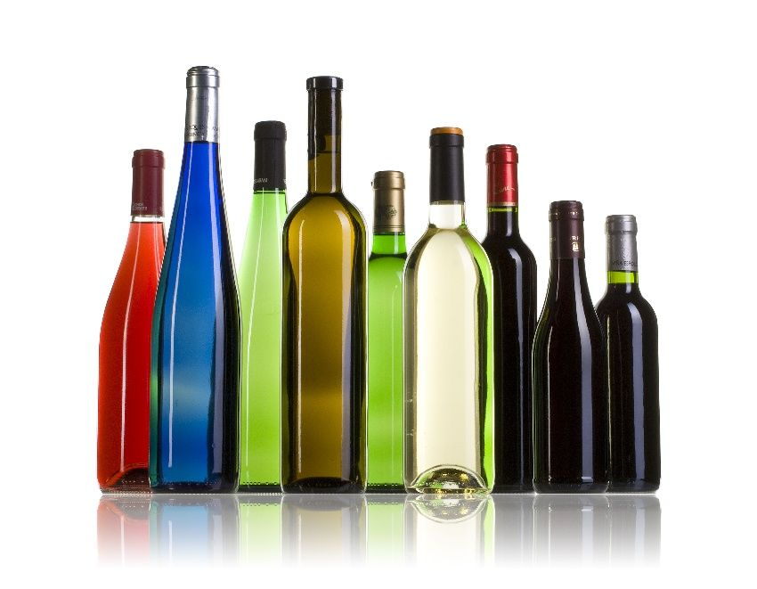
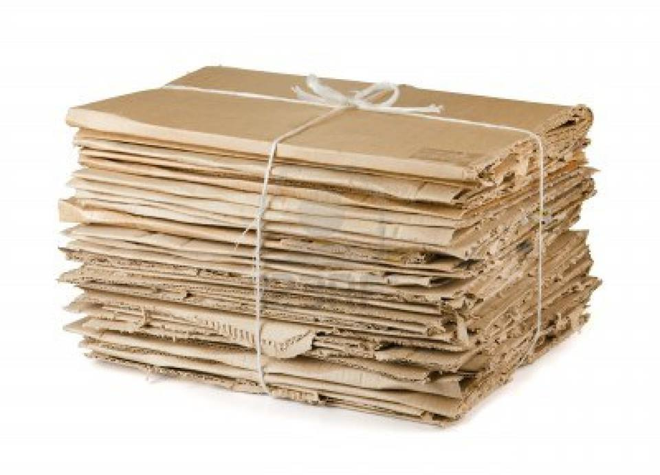
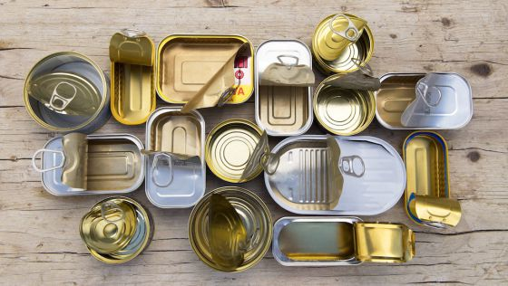
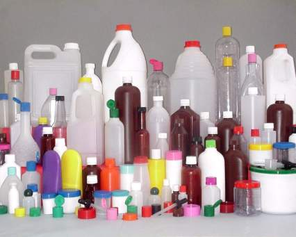
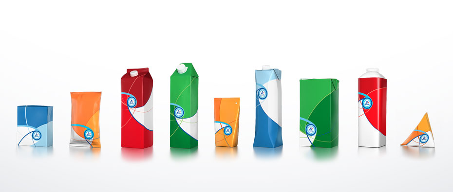
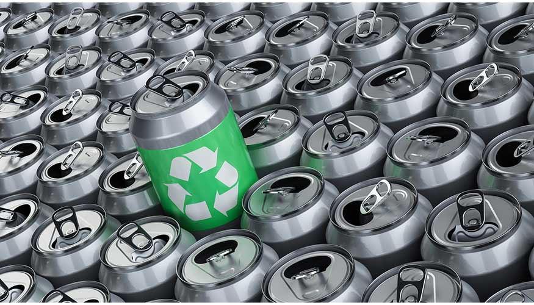

Materiales y restricciones

El envase de vidrio no debe presentar roturas ni fisuras
Los papeles estan permitidos para reciclar

Los cartones deben estar lo mas compactos posibles (cajas desarmadas) y limpios

Las latas deben estar bien limpias, secas y aplastadas

Los plasticos deben estar limpios y secos. NO se aceptan envases de comida

Los tetrabriks deben estar limpios, secos y lo mas compactos posible.

Tanto las latas de refresco como todos los envases de aluminio, SI son reciclables. Los materiales ferrosos NO son reciclables